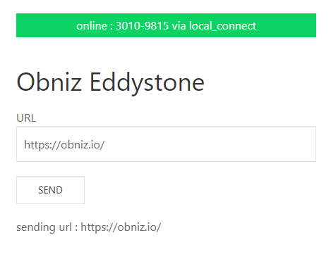
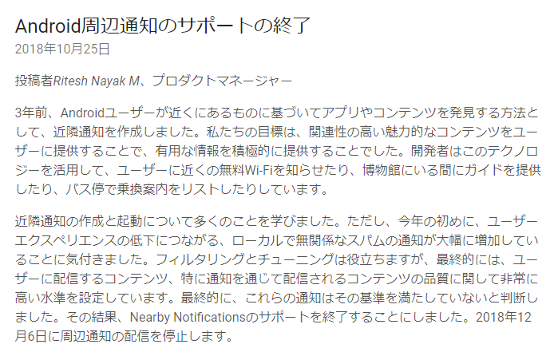

obniz で BLEを使ってEddystoneを出してみた
obniz で BLEを使ってEddystoneを出してみた
こんにちは、最近obnizの中の人になったわみです。
obniz Board 1Yが明日には発売ですね！いろいろと作ったのでぜひ触ってみてください。
今回はそんなこと関係なくBLEで遊んでいこうとおもいます。
Eddystoneとは
Googleが2015年頃に発表した、BLEを使ったビーコンやURLの配信をするための規格。
詳しい説明は、次のようなサイトにお任せするとして、なにがいいのかというとURLを手軽に配布できるところが非常によいです。
https://dev.classmethod.jp/smartphone/eddystone/
obnizがJavaScriptで動かせるのでWebエンジニアでも触れるようなデバイスで、URLを手軽に配布できるのはWebエンジニア的に導線を一つ増やすことができるので非常に良いと思います。
プログラム
<!DOCTYPE html>
<head>
<meta charset="utf-8">
<meta name="viewport" content="width=device-width, initial-scale=1">
<script src="https://obniz.io/js/jquery-3.2.1.min.js"></script>
<script src="https://unpkg.com/obniz@3.0.0/obniz.js" crossorigin="anonymous"></script>
<link rel="stylesheet" href="https://cdn.jsdelivr.net/npm/uikit@3.2.3/dist/css/uikit.min.css" />
<style>
body {
margin: 2em ;
}
</style>
</head>
<body>
<div id="obniz-debug"></div>
<H1>Obniz Eddystone</H1>
<form name="form_url">
<p>
<label>URL
<input class="uk-textarea" name="url" type="text" value="https://obniz.io/" size="100" required/>
</label>
</p>
<input class="uk-button uk-button-default" type="button" value="send" id="sendurl">
</form>
<p id="obniz_url"></p>
<script>
var obniz = new Obniz("OBNIZ_ID");
obniz.onconnect = async function () {
$("#sendurl").on("click", function(){
let url = document.form_url.url.value;
console.log(url)
if(url.length == 0){
alart("url length error");
return;
}
let advData = [0x02, 0x01, 0x06, 0x03, 0x03, 0xAA, 0xFE,
0x00,//length
0x16, 0xAA, 0xFE, 0x10, 0x00,
0x00, 0x00, 0x00, 0x00, 0x00, 0x00, 0x00, 0x00, 0x00, 0x00, 0x00, 0x00, 0x00, 0x00, 0x00, 0x00, 0x00, 0x00];
if (url.indexOf("https://www.") == 0) {
advData[13] = 0x01;
url = url.substring(12);
} else if (url.indexOf("http://www.") == 0) {
advData[13] = 0x00;
url = url.substring(11);
} else if (url.indexOf("https://") == 0) {
advData[13] = 0x03;
url = url.substring(8);
} else if (url.indexOf("http://") == 0) {
advData[13] = 0x02;
url = url.substring(7);
} else {
throw new Error("URL Schema Error");
}
console.log(url);
if (url.length > 17) {
throw new Error("URL Length Error");
}
for (let i = 0; i < url.length; i++) {
advData[14 + i] = url.charCodeAt(i);
}
advData[7] = url.length + 6;
obniz.ble.advertisement.setAdvDataRaw(advData)
obniz.ble.advertisement.setScanRespData({
localName: "obniz Eddystone",
});
obniz.ble.advertisement.start();
document.getElementById("obniz_url").innerHTML = `sending url : ${document.form_url.url.value}`;
obniz.display.clear();
obniz.display.print("Eddystone Start");
obniz.display.print(document.form_url.url.value);
});
}
</script>
</body>
</html>

こんな感じの画面が表示されます。
URLの欄に送信したいURLを入力して、「SEND」を押すとBLEで送信が始まります。 URLの文字長は17文字までになっています。
BLEの出力をAndroidから確認してみましょう。

こんな感じでアプリから確認できるでしょう！
https://play.google.com/store/apps/details?id=com.bridou_n.beaconscanner&hl=ja
昔だと、Eddystoneに近づくと通知がでたはず…うーん？
検索してみる

https://android-developers.googleblog.com/2018/10/discontinuing-support-for-android.html
なんということでしょう！
Eddystoneは終わった規格でした。
まとめ
- obniz でBLEは簡単に出せる
- Eddystoneはいい規格だった
- 流行り廃りがはやいので注意しよう
かなしい…